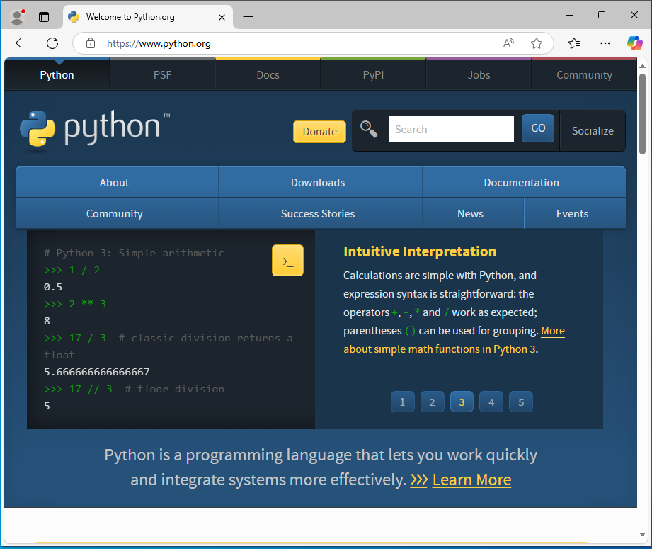
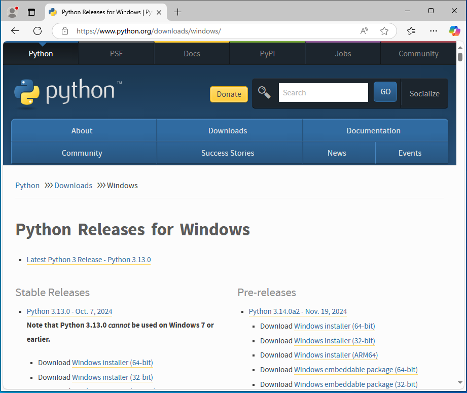
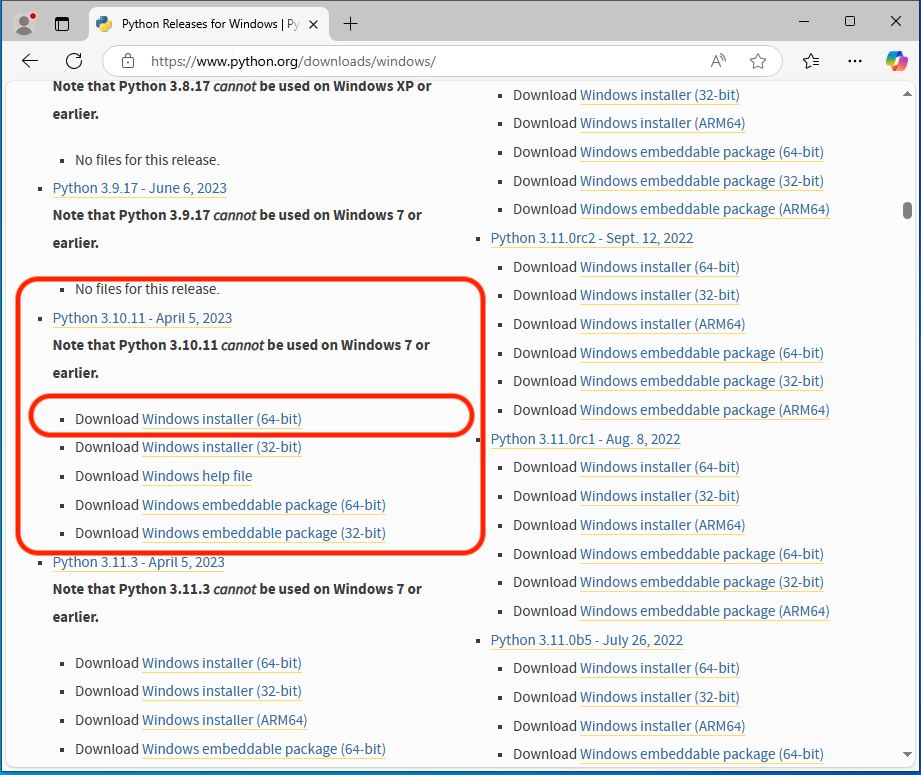

Install Python3¶
MountWizzard4 is a python3 application based on some python libraries and uses Qt5/6 as framework for GUI. Different to past versions of MountWizzard4 there will be no one box solution (MAC bundle, EXE File, etc.) available. As MountWizzard4 is python3 and comes with internal update functionality, it uses a standard python3 environment. Ideally it is recommended in a virtualenv.
The first step is to install the appropriate python3 package if not already installed. For all platforms installer are available. Please look here:
{kind=link}
And the link to the python website: https://www.python.org.
Please follow the descriptions that comes with the installers. To give a short overview here are some quick installation hints for all platforms.
Warning
Please do not use a newer version of python than recommended for the MountWizzard4 version you would like to use. Some libraries bring precompiled binaries with them and they might not be available for a newer python version.
If there is already an appropriate python3 installed, you can skip this section and go directly to the MountWizzard4 installation process. If you have to install python3 this has to be done only once for as many MountWizzard4 installations you might want.
There are videos for multiple use cases on the youtube channel: https://www.youtube.com/channel/UCJD-5qdLEcBTCugltqw1hXA
Note
On windows there are some new features which supports comet, earth rotation and asteroids update for the mount. These functions are available from python 3.8.2 on. Earlier python versions have issues. If you would like to upgrade an older python installation, please see the comments below for windows. On other OS there is no need for doing that.
The actual recommended python version for MountWizzard4 is 3.10.
Windows Platform¶
Note
Windows makes a hard split between 32bit and 64bit versions. If your drivers and setup uses 64bit solutions, please install 64bit python!
Depending on your Windows version please download the installer for python3 from:
https://www.python.org/downloads/windows/
Switch to the windows part
{kind=link}
choose the appropriate installer,
{kind=link}
and follow the installation procedure.
Hint
Please take care that during the installation the checkbox “Add Python.exe to Path” is selected and to install for a single user if you want to use the scripts.
{kind=link}
MountWizzard4 does not need admin rights to run!
Mac OSx platform¶
Depending on your OSx version please download the installer for python3 from:
https://www.python.org/downloads/mac-osx/
and follow the installation procedure. MountWizzard4 does not need admin rights to run!
Warning
Using a Mac with Apple silicon need special treatment. There is rather any experience with these setups. Actually MountWizzard4 only support Intel architecture so you need to use the Rosetta emulator.
Ubuntu platform¶
Referring to Ubuntu 20.04 LTS as it comes with python3.8. This should work, but you could upgrade to a newer python3 version. This could be done by adding an appropriate repo, which enables this version.
Hint
If you update to a higher python version, please update to the latest supported python3 version (3.10 for MountWizzard4 3.x and 3.12 for MountWizzard4 4.x). There are many descriptions out, so please search for it in case you don’t know exactly.
An example is from: https://linuxize.com/post/how-to-install-python-3-7-on-ubuntu-18-04/
sudo add-apt-repository ppa:deadsnakes/ppa
sudo apt-get update
sudo apt-get upgrade
sudo apt-get install python3.10
Please check the right version and the availability of virtualenv in your setup. If virtualenv is not present in your setup, please install it prior to run the install scripts with:
sudo apt-get install python3-virtualenv